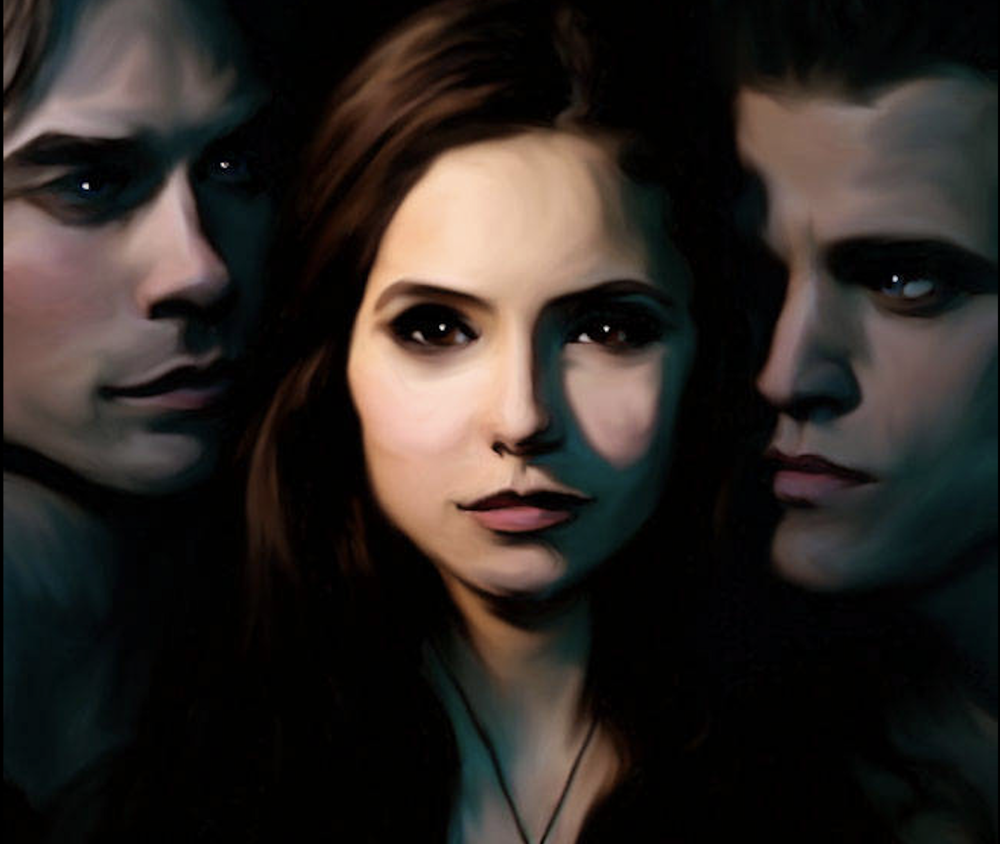

About
The Vampire Diaries is a supernatural teenage drama series about two vampire brothers, Stefan and Damon Salvatore. They revisit their hometown, Mystic Falls, and meet Elena Gilbert, a teengae girl who just lost both of her parents in a car accident. Elena falls in love with Stefan, the 162-year-old vampire who she thinks is a normal person. Their lives become crazier when Stefan's mysterious older brother Damon returns to Mystic Falls. The TV series aired on September 10th, 2009. I like it because it's excitingly supernatural and moody. I love the drama and the vampire brother love circle.
Main Characters
- Elena Gilbert
- Stefan Salvatore
- Damon Salvatore
- Jeremy Gilbert
- Caroline Forbes
- Tyler Lockwood
- Elijah Mikelson

Dhesia. (2009, November 12). Vampire diaries 01 [Digital artwork]. DeviantArt.
Episodes
| Number | Title | Length |
|---|---|---|
| 1 | Pilot | 42 min. |
| 2 | The Night of the Comet | 42 min. |
| 3 | Friday Night Bites | 42 min. |
| 4 | Family Ties | 42 min. |
| 5 | You’re Undead to Me | 42 min. |
| 6 | Lost Girls | 42 min. |
| 7 | Haunted | 41 min. |
| 8 | 162 Candles | 42 min. |